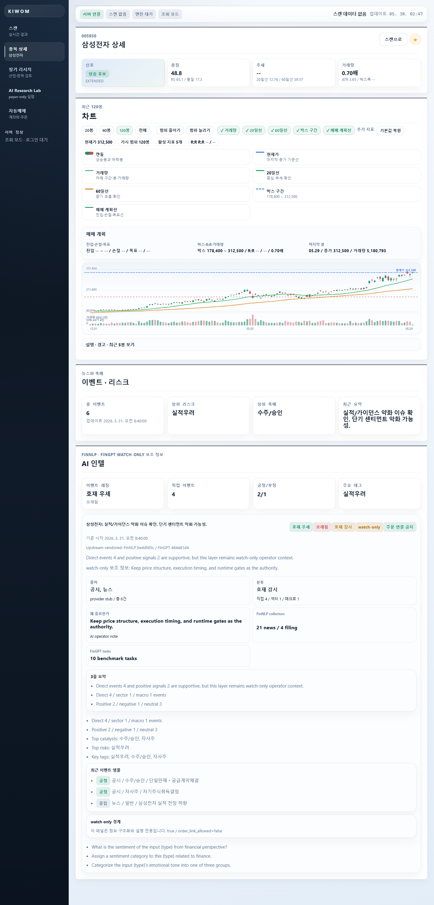
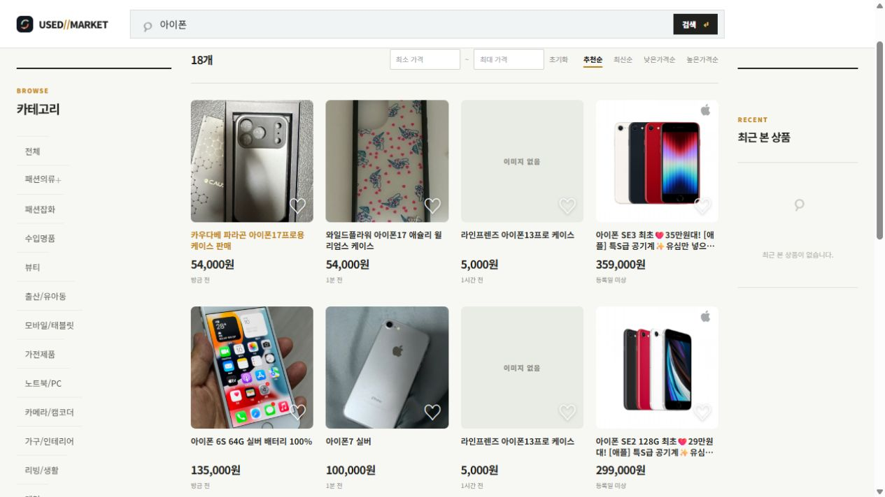
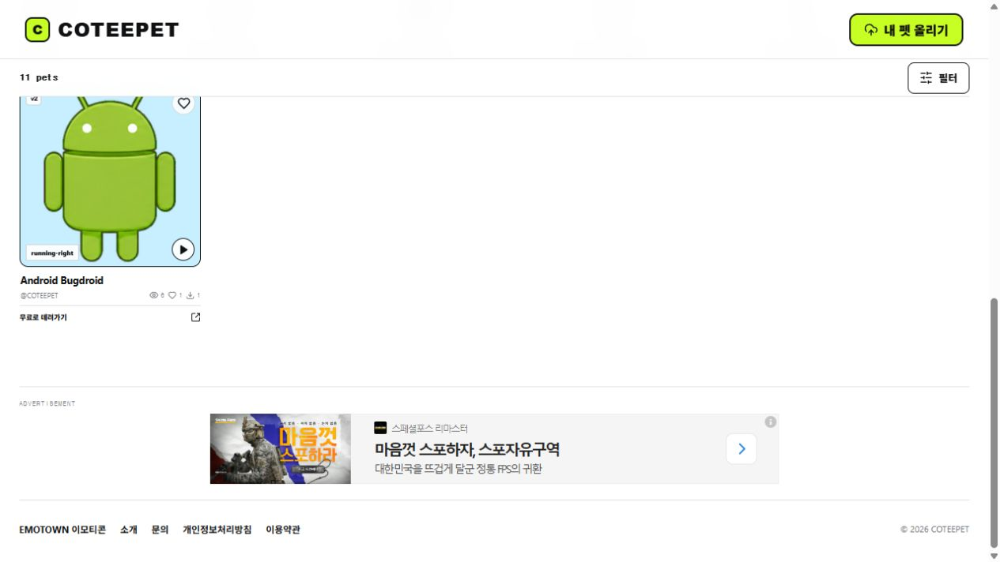
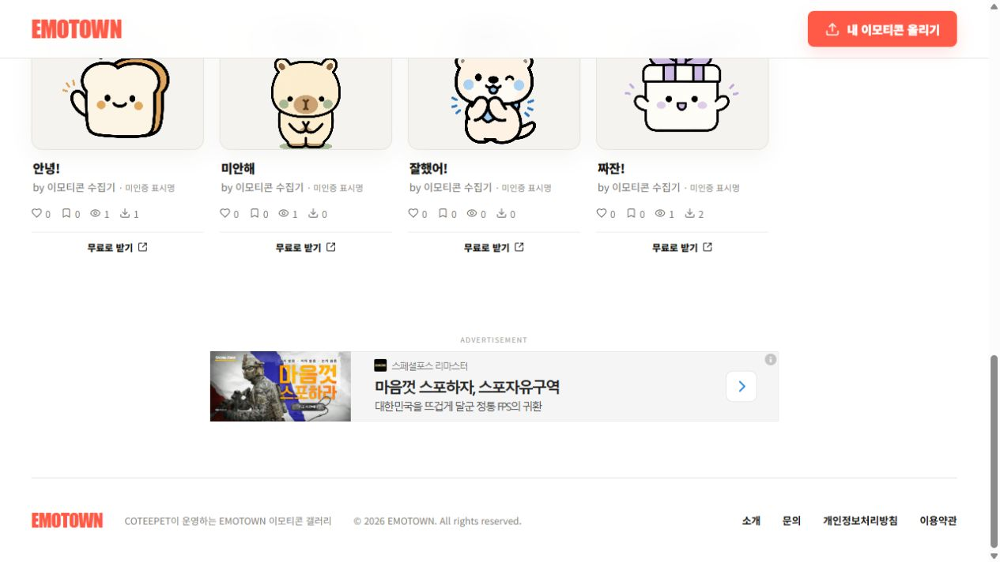
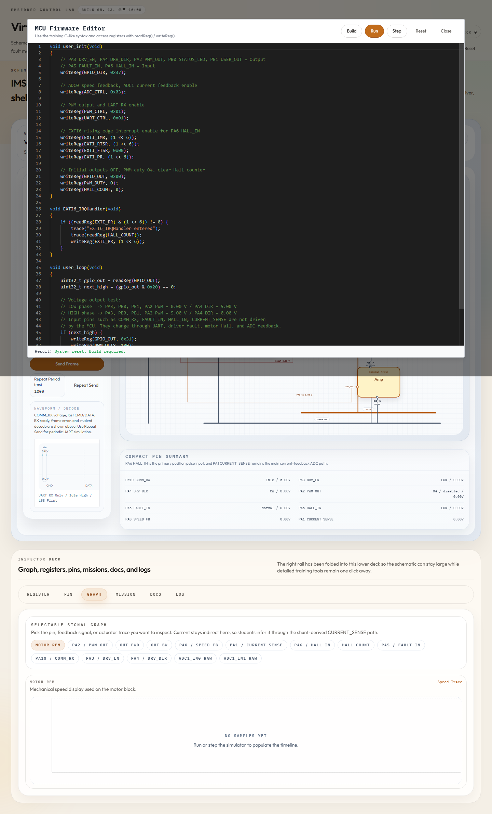
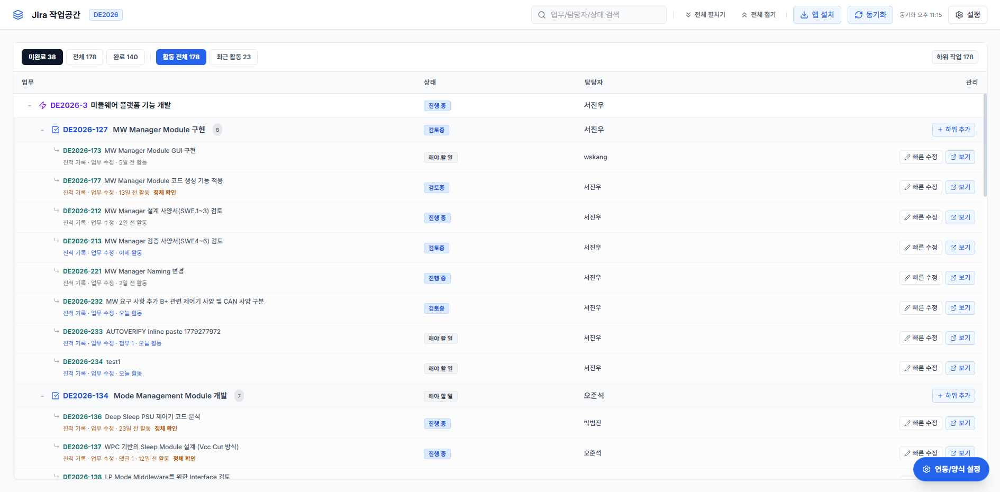

SOFTWARE ENGINEERING STUDIO
복잡한 기술을
제품으로 완성합니다.
데이터, 자동화, 임베디드 시스템과 AI 워크플로를
실제로 운영되는 소프트웨어로 연결합니다.
05
공개 운영 서비스
01
Marketplace 앱
01
독립 소프트웨어 스튜디오
Products & Services
기술을 이해하고
직접 운영하는 제품



05
Virtual MCU
데이터시트를 읽고 C 코드를 실행하며 GPIO, 레지스터, 그래프와 로그의 변화를 확인하는 가상 MCU 학습 환경입니다.
- 상태
- Live demo
- 분야
- Developer tools

06
Obsidian Context Map for Jira
Jira 이슈 계층과 관계를 맥락 지도처럼 펼쳐 보고, 선택한 이슈의 세부 정보를 한 화면에서 확인하는 Forge 앱입니다.
- 상태
- Marketplace review
- 분야
- Team tools

Research & Labs
다음 제품을 위한
작은 실험들
About AllrightSoft
깊게 이해하고,
끝까지 운영합니다.
올라잇소프트는 임베디드 시스템, 데이터 제품, 자동화 도구와 AI 워크플로를 직접 설계하고 구현하는 독립 소프트웨어 스튜디오입니다.
Embedded Systems
MCU, 통신, 모터 제어와 AUTOSAR의 실제 흐름을 이해합니다.
Automation
반복 작업을 신뢰할 수 있는 생성·검증 파이프라인으로 바꿉니다.
Web Services
데이터 수집부터 사용자 화면과 운영 배포까지 하나로 연결합니다.
AI Workflows
AI를 단순 대화가 아니라 조사, 실행, 검토가 이어지는 도구로 만듭니다.